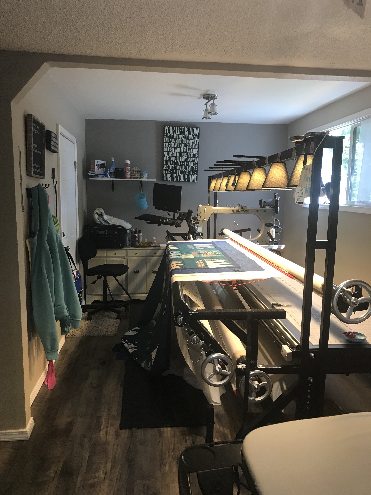

Welcome to Quilted By Lori!

Interested in another video about longarms? Click here
Quilted By Lori was born when Lori started sewing when her daughter Megan was small. It started small as halloween costumes and pillowcases. However, as any crafter knows it only stays small for so long. Soon it became more and more blankets, quilts, pillows, and anything else she could think up. About seven years ago she realized that she was spending more money paying someone to quilt her quilts than it would cost to run her own business. Today Lori is the happy owner of Bertha, a Gammill Statler Longarm Quilting Machine.